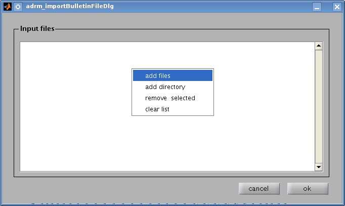
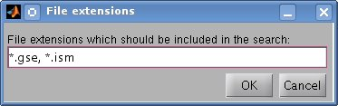

The module's edit window you can find the
input files listbox which provides the
input files context menu using the right mousebutton.

Using the context menu, you can
add files or add all files of a certain directory (
add directory) using a file selection filter.
The context menu items
remove selected and
clear list can be used to remove files from the input files listbox.
Once you have set up your list of earthquake bulletin files which should be imported into the Seismon database, you can confirm your selection by hitting the
ok button or you can discard your changes by clicking the
cancel button.
Adding all files from a directory
To add selected files from a directory (including all subfolders) you can use the
add directory menu item. This will open a dialog window where you can specify the file filter to be used when searching the specified folder and its subfolders.

The screenshot above shows the selection of all files having an .gse or .ism ending.
When using multiple file filters you have to seperate them using the comma sign (,).
Of course you can use more sophisticated file filters (e.g. event001*2010*.gse).
How the bulletin data is saved in the database
The module reads the data in the bulletin text files and transfers the data to the Seismon database. The events imported from a bulletin file are saved as bulletin event types. For each author in the bulletin a new eventset is created. Together with the event time marks, the event origin and the event picks (if available in the bulletin) are saved for the stations that are present in your network geometr. For example if you do import bulletin data which has some event picks at the Austrian station CONA, than the station CONA has to be already created in the Seismon geometry.
Because the bulletins don't define the events as it is done within the Seismon database (each event has an event begin and an event end), the event begin and the event end have to be computed from the data available in the bulletin file.
For each event, the event begin is set to the event origin time. The event end is computed from the mean arrival times of the stations at which the event has been picked. Most often this works fine, and the event end should mark approximately the first onset of the available data.
This method might fail when using bulletins with teleseismic picks when working with stations very near to the event origin or vice versa. Just keep in mind, that the event end marker imported from the bulletin might not exactly match with the data that you are working with.
You can use the following files to test the import of GSE2.0 and ISM2.0 short formatted earthquake bulletins.
The GSE2.0 file
zamgBulletin_2010_02_27.gse is a ZAMG earthquake bulletin downloaded using the ZAMG autodrm service (autodrm@zamg.ac.at). If you open the file you can see, that the whole email response has been saved to the file. The import function neglects all messages that are not part of the GSE2.0 format.
The ISM1.0_short file
iscCsemBulletin_20100227.ism is a ISC bulletin that has been created using the ISC web interface. The result of the web interface query has been saved to a textfile.
Both bulletins show the bulletin data of the 27th of February 2010 when the large Chile earthquake occured.